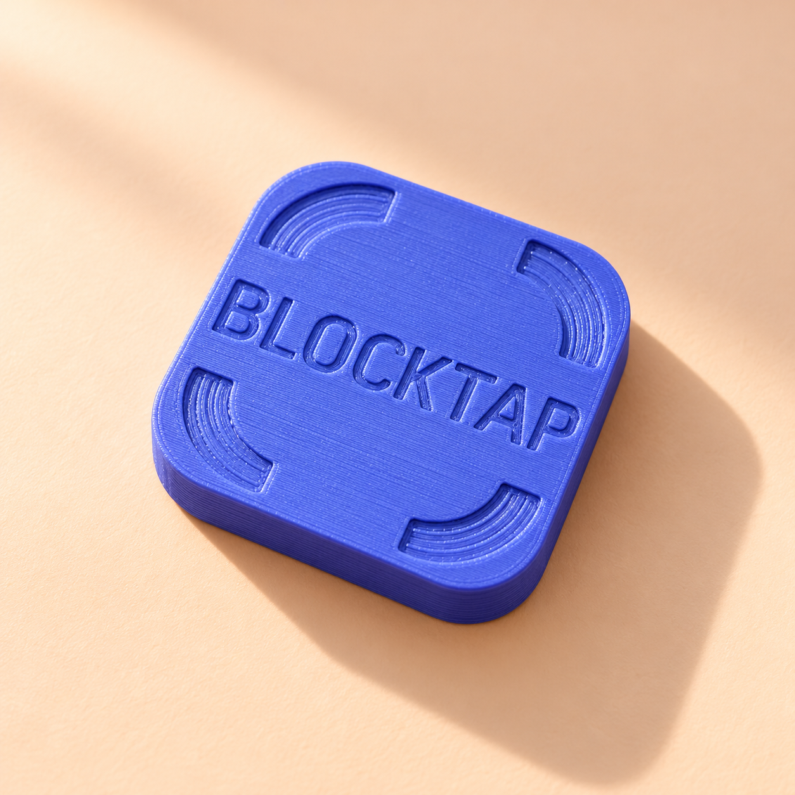

YOUR OFFLINE SWITCH.Prototype-inspired product visualizationA little distance. A lot more life. 01 / BLOCKTAP
A PHYSICAL PAUSE FOR YOUR DIGITAL LIFEMeet your
Continue to billing
Meet your
little reset.
Blocktap
Price to be announcedA small, physical boundary between you and the endless scroll. Leave your Blocktap behind. Take your attention with you.
Color Violet✓
In your order1 × Blocktap
Companion appFoqos for iPhone
AvailabilityIn the making
A preview of what’s to come. Orders aren’t open yet.
Small block. Big intention.
Choose the apps you want to pause in Foqos, then use a real-world reminder to make stepping away intentional.
See how it works